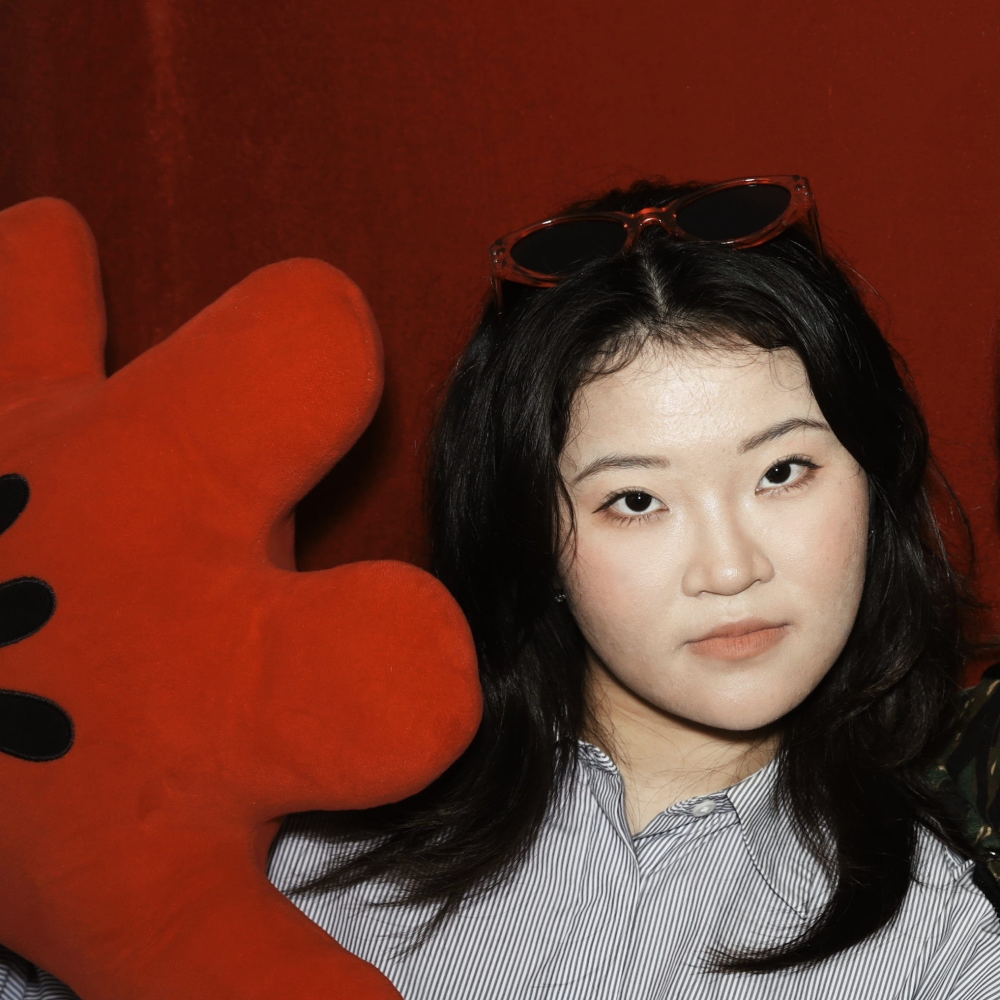

内容创作 · 文案策划 · 视觉设计
作品名称：《海师校园（MBTI版）》
发布平台：海师微学工（海南师范大学官方公众号）
角色：选题策划 / 文案撰写 / 排版设计
创作背景：MBTI是Z世代社交硬通货，校园场所却鲜少被“人格化”。本推文将教学楼、宿舍、图书馆、操场等校园地标与16型人格一一对应，用年轻化的语言重新定义校园空间。
点击卡片查看原图
作品名称：《SOS！人设藏不住啦！》
发布平台：海师微学工（海南师范大学官方公众号）
角色：选题策划 / 文案撰写 / 排版设计
创作背景：当代大学生在社交媒体上热衷于“立人设”，而私下却常自嘲“躺平”“脆皮”“发量少”。本推文抓住这一反差，用食物、人物等趣味比喻，引导学生幽默地“自曝人设”。
点击卡片查看原图
作品名称：《冬日的正确打开方式——海南专属暖冬指南》
发布平台：海师微学工（校园官方微信公众号）
角色：选题策划 / 文案撰写 / 排版设计
创作背景：面向海南高校学生，本地冬季体感“不冷但昼夜温差大”，常规冬日推文不适用。需结合地域特色，传递温暖陪伴感。
点击卡片查看原图
作品名称：高校开展2023年辅导员及学生心理骨干培训
发布平台：海师微学工（校园官方微信公众号）
角色：新闻采写 / 内容编辑 / 排版配图
创作背景：积极响应教育部等十七部门联合印发的心理健康专项行动计划，针对辅导员及学生心理骨干的实际需求，报道为期三天的专题培训。
点击卡片查看原图
作品名称：《大学生安全教育》教学形式多样化探索（二）——海南师范大学开展应急救护知识培训课程
发布平台：海师微学工（校园官方微信公众号）
角色：新闻采写 / 内容编辑 / 排版配图
创作背景：响应《大学生安全教育》课程教学改革需求，突破传统理论授课模式，引入实践操作环节，提升学生的应急救护能力。本篇为系列探索的第二篇，聚焦应急救护培训。
点击卡片查看原图
作品名称：《星光熠熠 荣耀海师》
发布平台：海师微学工（校园官方微信公众号）
角色：新闻采写 / 内容编辑 / 排版配图
创作背景：学期末或年度评优节点，需集中展示各类荣誉获得者（奖学金、优秀学生干部、先进集体等）。
点击卡片查看原图
作品名称：《黎深十大“媚”茉行为》
发布平台：小红书（个人账号）
角色：选题/文案/排版
创作背景：基于热门角色“黎深”的粉丝圈层文化，挖掘角色互动中的“苏感”细节，以轻松吐槽+甜宠盘点形式引发同好共鸣。
点击卡片查看原图
作品名称：《42岁的黎深长了第一根白头发》
发布平台：小红书（个人账号）角色：选题/文案/排版
创作背景：基于“黎深”这一角色，选择“衰老与陪伴”为切入点。
点击卡片查看原图
作品名称：《虎牙总磕到女朋友怎么办？》
发布平台：小红书（个人账号）
角色：选题/文案/角色对话/排版
创作背景：采用“论坛发帖+回帖区”的叙事形式，以第一人称求助帖切入，制造“看似真求助、实则秀恩爱”的反差感。
点击卡片查看原图
作品名称：《Offshore fancies》第四弹——刘耀文《近海狂想》截图调色
发布平台：微博（超话：时代少年团）
角色：选图/截图/调色/文案/排版
创作背景：基于《近海狂想》预告及花絮素材，精选刘耀文镜头进行二次构图与调色，配合氛围感文案，在超话内分享。
点击卡片查看原图
作品名称：《情书》电影自截图
发布平台：微博（个人账号）
角色：选图/截图/发布/文案
创作背景：2024年12月6日，《情书》女主角中山美穗去世消息传出。作为经典爱情电影的影迷,发布了电影经典画面自截图。
点击卡片查看原图
作品名称：黄宣表情包自修
发布平台：微博（个人账号）
角色：独立创作：截图/修图/文案/发布
创作背景：《歌手》节目热播期间，黄宣凭借“有梗”表现登上热搜。通过截取其节目画面，二次创作成系列表情包，配以调侃文案发布。
点击卡片查看原图